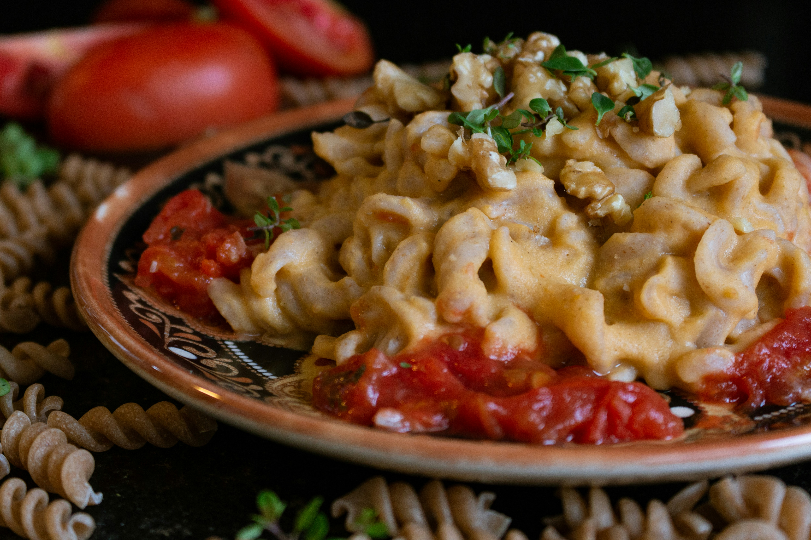

Oreo Truffles
Made with oreo cookies, cream cheese, and semisweet chocolate. Definitely a treat you wouldn't want to miss!
Ingredients
- 2 packages of semisweet baking chocolate
- Finely Crushed Oreos
- 1 block of softened cream cheese
Steps
- Melt the chocolate.
- Use a food processor to make Oreo cookie crumbs.
- Transfer most of the crumbs to a bowl and mix with the softened cream cheese.
- Roll the mixture into balls.
- Use a fork to dip the balls into melted chocolate.
- Place the balls on a lined cookie sheet and sprinkle with remaining cookie crumbs.
- Refrigerate until firm.